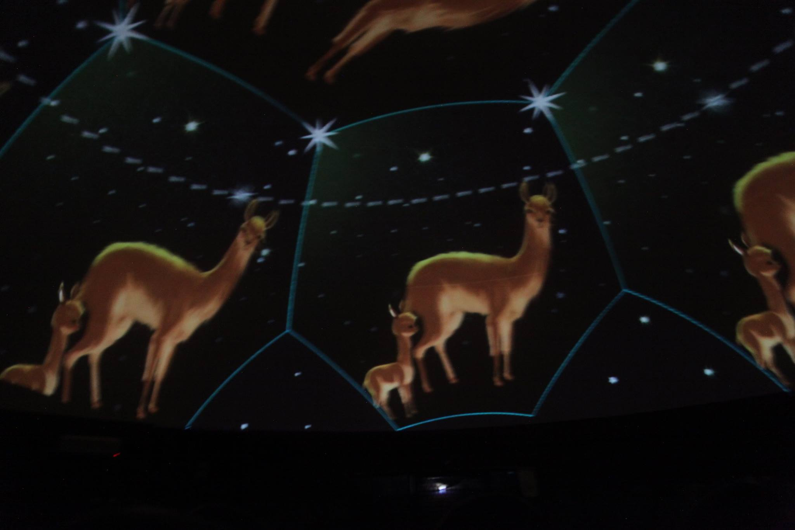

Astrolabio
Taller Fulldome
Exploración inmersiva del cielo y de las formas de representación astronómica a través del formato fulldome.
Datos técnicos
- Año: 2016
- Duraci´: 2:00
- Formato: fulldome
- País: Argentina
- Contexto de producción: Taller Fulldome
Descripción
Astrolabio propone una exploración inmersiva del cielo y de las formas de representación astronómica a través del formato fulldome. La obra articula relaciones entre visualización, espacialidad y percepción, generando una experiencia que vincula el conocimiento científico con dimensiones sensibles y estéticas.
A partir de la construcción de imágenes celestes y estructuras visuales dinámicas, el proyecto investiga modos de traducción entre fenómenos astronómicos, observación y experiencia inmersiva, situando al espectador en un entorno expandido de contemplación y lectura del cielo.
Dimensión pedagógica
La obra permite abordar cruces entre arte y ciencia en entornos inmersivos, facilitando la exploración de modelos de visualización y representación del cielo. También habilita reflexiones sobre la mediación tecnológica en la construcción de conocimiento y la experiencia perceptiva en espacios fulldome.
En este sentido, Astrolabio funciona como un caso relevante para pensar el domo no solo como soporte de exhibición sino como entorno de experimentación entre percepción, observación, visualización y aprendizaje.
Contexto de investigación
La obra se vincula con una línea de investigación que Laura Palavecino desarrollará posteriormente en su trabajo académico, donde explora las relaciones entre arte, ciencia, tecnología y poéticas celestes. En este sentido, Astrolabio puede leerse como un antecedente experimental en el que se ensayan estrategias de visualización, espacialidad e inmersión que luego serán formalizadas teóricamente.
Registro audiovisual

▶